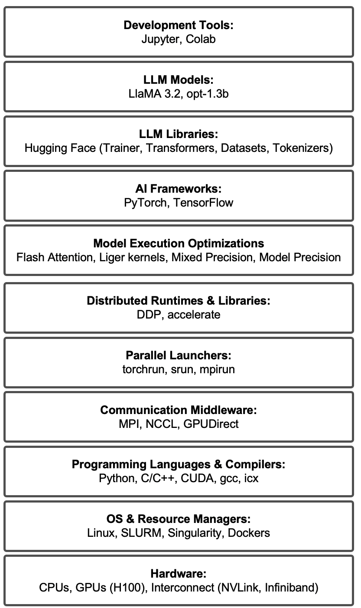

Technologies and Navigation aids
This section provides a set of practical navigation aids designed to help readers orient themselves within the technical breadth of the book. Given the wide range of technologies, frameworks, and tools covered, these aids serve as reference points rather than as material to be read linearly.
They are especially useful for selective reading, course design, and quick lookup during hands-on work.
Technologies Covered in This Book
This book spans a broad portion of the modern supercomputing and AI training software stack, from hardware and system software to high-level AI frameworks and large language model tooling.
Rather than treating these technologies in isolation, the book presents them as interacting components of a coherent execution ecosystem. Some technologies are studied in depth through dedicated chapters and tasks, while others are introduced as enabling tools required to support realistic workflows.
The list of technologies covered in figure 5 reflects this integrated perspective. It is not intended as a checklist of skills the reader is expected to master exhaustively, but as a transparent overview of the technical landscape explored throughout the book.

Figure 5 — Technologies covered in this book.
Mapping Technologies to Book Chapters
Given the modular nature of the book, individual technologies often appear across multiple chapters and abstraction layers. To facilitate navigation, a mapping is provided that associates each major technology with the chapters in which it is introduced, used, or analyzed in detail. This mapping is intended as a reference index, allowing readers to quickly locate relevant material without following the book sequentially.
This is particularly useful for:
-
instructors designing courses around specific tools or frameworks,
-
practitioners seeking targeted explanations,
-
and readers returning to the book as a reference after an initial reading.
| Category | Technology | Chapters |
|---|---|---|
| Development Tools | Jupyter | Cap. 3,7, Appendices |
| Development Tools | Colab | Cap. 7, 14, Appendices |
| LLM Models | LLaMA 3.2 1B | Cap. 14 |
| LLM Models | opt-1.3b | Cap. 14,15 |
| LLM Libraries | Hugging Face | Cap. 13,14 |
| LLM Libraries | Trainer | Cap. 13,14,15 |
| LLM Libraries | Transformers | Cap. 14 |
| LLM Libraries | Datasets | Cap. 14 |
| LLM Libraries | Tokenizers | Cap. 14 |
| AI Frameworks | PyTorch | Cap. 9, 11, 12, 15 |
| AI Frameworks | TensorFlow | Cap. 7, 8, 10 |
| Model Execution Optimizations | Flash Attention | Cap. 15 |
| Model Execution Optimizations | Liger kernels | Cap. 15 |
| Model Execution Optimizations | Mixed Precision | Cap. 11, 15 |
| Model Execution Optimizations | Model Precision | Cap. 15 |
| Distributed Runtimes & Libraries | DDP | Cap. 12, 15 |
| Distributed Runtimes & Libraries | accelerate | Cap. 13 |
| Parallel Launchers | torchrun | Cap. 12, 15 |
| Parallel Launchers | srun | Cap. 4, 5, 11, 12, 13 |
| Parallel Launchers | mpirun | Cap. 4 , 6 |
| Communication Middleware | MPI | Cap. 4, 6 |
| Communication Middleware | NCCL | Cap. 6, 12 |
| Communication Middleware | GPUDirect | Cap. 6 |
| Programming Languages & Compilers | Python | Appendices |
| Programming Languages & Compilers | C/C++ | Appendices |
| Programming Languages & Compilers | CUDA | Cap. 5 |
| Programming Languages & Compilers | gcc | Cap. 3 |
| Programming Languages & Compilers | icx | Cap. 3 |
| OS & Resource Managers | Linux | Appendices |
| OS & Resource Managers | SLURM | Cap. 3 |
| OS & Resource Managers | Singularity | Cap. 3 |
| OS & Resource Managers | Dockers | Cap. 3 |
| Hardware | CPUs | Cap. 2 |
| Hardware | GPUs (H100) | Cap. 2, 6 |
| Hardware | Interconnect (NVLink) | Cap. 2,6 |
| Hardware | Interconnect (Infiniband) | Cap. 2 |